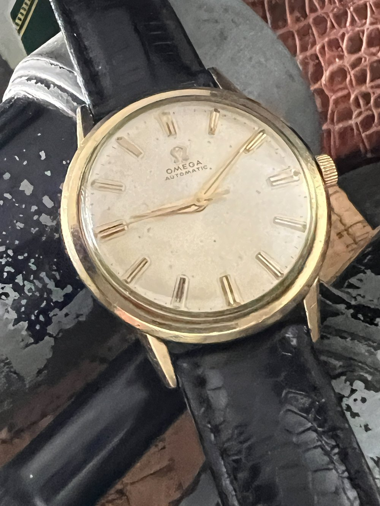

The Tick-Tock of a New Passion: Tracing My Path into the World of Watches
The world felt a little bigger, a little more complex, the first time I held my father’s watch. It wasn't anything overtly flashy – a simple, classic dress watch he wore for special occasions, a vintage Omega Seamaster De Ville from the 1960s, its gold-plated case showing the gentle wear of decades, the silvered dial clean and understated with slim baton hour markers. I must have been no older than seven or eight, my hand dwarfed by the cool metal case and the smooth, slightly cracked brown leather strap. The weight of it felt significant, a tangible piece of his adult world, so different from my plastic digital toys. I remember pressing it to my ear, utterly captivated by the faint, rhythmic tick-tock echoing from within, a sound far more organic and alive than the silent precision of quartz. It was a tiny, self-contained machine, a miniature universe keeping perfect time on his wrist, powered by unseen springs and gears. That simple sound, that small, heavy object, planted a seed of curiosity that lay dormant for years, waiting for the right conditions to sprout into a full-blown fascination.
On this corner of my website, which explores the quiet beauty found in craftsmanship and the personal stories behind cherished objects, this visual essay serves as a chronicle of that sprouting – my personal journey into the intricate and captivating world of watches and horology. Unlike the detailed pictorial catalog of mid-century modern furniture I assembled last year or the photo-documentary on the lost art of neon sign making I presented previously, this piece focuses on a process unfolding over time: the gradual evolution from casual observer to budding watch enthusiast. Through a sequence of images and accompanying reflections, you'll follow the winding path that led me from that initial childhood wonder to the dedicated research, endless video rabbit holes, and growing appreciation for the history, craftsmanship, and sheer mechanical artistry contained within these timekeeping devices. It's a journey from simply seeing a watch as a functional item to understanding it as a complex narrative of human ingenuity and aesthetic expression.
Over the course of this essay, we will trace the key moments and influences that shaped this burgeoning interest. We’ll begin with those early, almost unconscious impressions shaped by my father’s modest collection, move through the deliberate steps I took to educate myself – poring over articles, forums like WatchUSeek and The Rolex Forums, and databases such as Chrono24 late into the night – and delve into the immersive world of online watch communities and video content from creators like Teddy Baldassarre, Jenni Elle, and Watchfinder & Co. that truly accelerated my understanding and passion. This is not just a story about learning facts and figures, like memorizing reference numbers or complications; it's about the development of an eye for detail, an appreciation for heritage that stretches back centuries, and the unexpected connections forged with fellow enthusiasts across the globe, all united by a shared enthusiasm for wristwatches. Prepare to see the world of timekeeping through my eyes, a journey marked by curiosity, discovery, and the persistent, fascinating tick-tock that started it all.
Sub-sequence 1: The Spark of Curiosity
Caption: The kind of simple elegance that first caught my eye – much like my father's treasured Omega.
This paragraph expands on the earliest moments of my interest. My father wasn't a "collector" in the modern sense, but he had a few good watches. Besides the Omega, there was a robust Seiko 5 automatic he wore for everyday tasks, its stainless-steel bracelet scratched from years of gardening and DIY projects, and a slim, gold-toned Citizen quartz for dressier, but not quite "Omega-worthy," occasions. Holding his Omega, however, was different. The cool, smooth feel of the case back against my palm, the surprisingly soft leather of the strap, the quiet authority of its ticking – it felt like a secret. The dial was beautifully balanced, with the delicate "Omega" script and the applied logo. It wasn’t just about telling time; it was an object of quiet beauty, a testament to a different era of craftsmanship. I remember tracing the sweep of the second hand, smoother than any clock in our house, and wondering how such a small thing could contain so much intricate life.
That encounter raised so many questions in my young mind, most of which I couldn't articulate then. How did it work without a battery? Why did it feel so much more alive than the digital watch on my own wrist? Why did my father treat it with such reverence, carefully winding it before placing it in its box? After that, I started noticing watches more. I'd glance at the wrists of teachers, relatives, even characters on television, trying to discern if their watches had that same quiet dignity. Most were unremarkable, purely functional, but occasionally I’d spot one that seemed to have a story, a presence. The seed was small, but the soil of curiosity had been tilled. I didn't actively pursue this interest for many years – life, school, and other hobbies took precedence – but that initial sensory experience, the weight, the sound, the visual harmony of that Omega, remained a subtle undercurrent.
Caption: A vintage piece reminiscent of the watches that started it all, fueling a renewed curiosity years later.
This image, featuring a robust vintage Zenith El Primero, echoes the complexity I only later came to appreciate. It wasn't until my late twenties, Browse an antique market on a whim, that the dormant seed truly began to sprout. I stumbled upon a stall filled with old timepieces, many in states of disrepair, but a few glinted with a familiar charm. One, a manually wound chronograph from the 1970s with a faded "panda" dial, particularly caught my attention. It wasn't my father's style, yet it possessed that same tangible history, that same mechanical soul. Holding it, the memories of his Omega came flooding back. The intricate sub-dials, the pushers on the side – it was a puzzle box, hinting at functions I didn't understand but desperately wanted to. This encounter, so many years later, acted as a catalyst. It wasn't just about appreciating a beautiful object anymore; it was about understanding it. The questions from childhood returned, but this time, I had the means and the motivation to find answers. That vintage chronograph, which I didn't buy but photographed obsessively, sent me down the initial path of online research, a casual search for "how do chronograph watches work?" that would soon spiral into a full-blown obsession.
Sub-sequence 2: The Dive into Research and Discovery
Caption: Navigating the vast oceans of online horology communities, where every click opened a new world.
Transitioning from that rekindled curiosity to active research felt like stepping into a vast, uncharted ocean. My initial Google searches were simplistic: "best vintage watches," "how mechanical watches work," "history of Omega." I quickly discovered a vibrant ecosystem of online resources. Forums like WatchUSeek became daily haunts, with their endless threads dissecting everything from the merits of a particular movement to the history of obscure brands. Blogs like Hodinkee, Worn & Wound, and Fratello Watches offered beautifully written articles, stunning photography, and expert insights that were both aspirational and educational. I'd spend hours cross-referencing information, comparing opinions, and trying to build a mental map of this new world. Initially, the sheer volume of information was overwhelming – terms like "escapement," "mainspring," "jewels," "caliber," and "complications" like "tourbillon" or "minute repeater" were like a foreign language. I was looking for clarity, for a foundational understanding of what made these tiny machines tick, and why some were valued more than others.
Elaborating on this process of self-education, it was a thrilling, albeit sometimes frustrating, experience. One of the most surprising things I learned was the sheer passion of the online watch community. These weren't just casual hobbyists; many were deeply knowledgeable individuals, willing to share their expertise with newcomers like me. I learned about the fundamental differences between quartz and mechanical movements, and within mechanical, the distinction between manual-winding and automatic. Terms like "power reserve," "beats per hour (BPH)," and "chronometer certification (COSC)" started to make sense. I discovered the "Holy Trinity" of Patek Philippe, Audemars Piguet, and Vacheron Constantin, and then the myriad of other esteemed brands like Jaeger-LeCoultre, Rolex, Omega, Breitling, and IWC, each with its own rich heritage and iconic models. The history was particularly fascinating – understanding how watchmaking evolved from pocket watches to trench watches in WWI, the impact of the quartz crisis in the 1970s and 80s, and the subsequent resurgence of mechanical watchmaking. Each new piece of knowledge felt like unlocking a new level in a captivating game. The challenge was discerning reliable information from mere opinion, but the excitement of discovery far outweighed any frustration.
Caption: Hours spent absorbing knowledge and infectious enthusiasm from watch creators online.
The role of video content in my journey cannot be overstated. While forums and articles provided the facts, YouTube channels brought the world of watches to life. Creators like Teddy Baldassarre, with his comprehensive reviews and buyer's guides, were invaluable for understanding the contemporary market. Jenni Elle offered a wonderfully fresh perspective, often focusing on design and wearability. The high-production value and deep dives into iconic pieces by Watchfinder & Co. were like mini-documentaries, utterly captivating. Then there were channels focusing on watchmaking itself, like Mark Lovick's "Watch Repair Channel," where I could see movements being painstakingly disassembled and reassembled. I consumed everything: reviews of watches I could never afford, historical retrospectives, guides to spotting fakes, explanations of complex complications, and even factory tours. These videos did more than justeducate; they conveyed the passion of the creators. Seeing their genuine excitement when discussing a beautifully finished movement or an iconic design was infectious and helped to solidify my own growing enthusiasm.
Watching these videos helped me appreciate nuances I might have otherwise missed. For instance, understanding the difference between a stamped clasp and a milled clasp, or recognizing various types of finishing on a movement, became clearer through visual demonstrations. I started to develop preferences. I found myself drawn to the robust functionality of dive watches like the Seiko SKX007 or the Tudor Black Bay, the understated elegance of Bauhaus-inspired designs from Nomos Glashütte, and the intricate beauty of chronographs, particularly those with historical significance like the Omega Speedmaster or the Zenith El Primero. Videos helped me differentiate between an ETA, Sellita, or Miyota movement and an in-house caliber, and understand the implications of each. They also introduced me to the burgeoning world of microbrands, offering unique designs and great value, often with passionate founders who engaged directly with their communities online. The visual medium made the technical aspects more digestible and the aesthetic details more apparent.
Caption: Unpacking the intricate mechanics within – a universe of precision engineering in miniature.
As my research deepened, so did my fascination with the technical side – how these watches actually worked. I moved from general explanations to seeking out diagrams, animations, and detailed articles on watch movements. Seeing an exploded view of an ETA 2824 or a Seiko NH35 movement for the first time was a revelation. I began to understand the flow of power from the mainspring through the gear train to the escapement, which, with its pallet fork and balance wheel, creates that characteristic tick-tock and regulates the release of energy. Learning about the role of jewels as low-friction bearings, the function of the automatic winding system with its rotor, and the ingenuity of complications like the date function or a chronograph mechanism filled me with awe. It was like discovering a hidden world of microscopic engineering. The precision required to manufacture and assemble these hundreds of tiny components, many smaller than a pinhead, to work in perfect synchrony, day in and day out, for decades, was simply astounding. This appreciation for the mechanical artistry became a cornerstone of my passion. It wasn't just a pretty face; it was a marvel of human ingenuity.

Caption: Developing an eye for the subtle details that matter: the interplay of light, texture, and finish.
Before diving into the global history of watchmaking, I wanted to share a bit about a watch that's part of my own journey: the Fossil Machine Chronograph in Black Stainless Steel. This watch holds a place in my collection and represents a starting point in my appreciation for timepieces. Its design, with the bold black stainless steel case and bracelet, gives it a robust and modern feel. The substantial feel of the metal on the wrist, combined with the dark, industrial aesthetic, makes it a noticeable accessory. The chronograph function adds a layer of practicality and visual interest to the dial, with its sub-dials for measuring elapsed time and the satisfying click of the pushers. While perhaps not in the realm of haute horlogerie with intricate mechanical movements, this watch offers a look into how design, material, and function come together in an accessible package. Its reliable quartz movement provides accurate timekeeping without the need for daily winding, making it a practical choice for everyday wear. It's a reliable everyday watch that sparked my initial interest in learning more about what makes different watches tick, both literally and figuratively, and appreciating the blend of engineering and style found in even entry-level timepieces.
Caption: The culmination of research – the first watch acquired with intention, a Seiko Presage SRPB41 "Blue Moon."
After months of absorbing information, comparing models, and setting a budget, the experience of acquiring my first watch as a true enthusiast was a significant milestone. It wasn't a spontaneous purchase; it was the result of a long, deliberate search. I wanted something automatic, versatile enough for daily wear but with a distinct character. I considered divers, field watches, and even some vintage pieces. Ultimately, I chose a Seiko Presage SRPB41, affectionately nicknamed the "Blue Moon." The stunning sunburst blue dial, reminiscent of a cocktail, captivated me from the first time I saw it in a video review. The applied indices, the elegant dauphine hands, the display case back showing the 4R35 movement – it ticked all the boxes for what I was looking for in an affordable, beautiful mechanical watch. I read every review, watched every video, and even lurked on forums dedicated to the Presage line. The anticipation was immense. When the box finally arrived, unboxing it felt like a ceremony. The cool weight of the stainless steel, the intricate pattern on the dial catching the light, the smooth sweep of the seconds hand – it was even more impressive in person.
Reflecting further on what owning that Seiko Presage meant to me, it was far more than just acquiring a new possession. After all the research, watching it tick on my wrist felt like a validation of my newfound passion. It was a tangible connection to the world I had been exploring digitally for so long. It solidified my interest, transforming it from a purely academic pursuit into a lived experience. Wearing it daily, I found myself appreciating its small details even more – the way the light played on the faceted indices, the subtle whir of the rotor when I moved my wrist. It also opened up new avenues of interest. I started researching the history of Seiko more deeply, learning about their contributions to watchmaking. It made me think about strap choices, and I soon found myself exploring different leather and NATO straps to change its look. This first intentional purchase wasn't an endpoint; it was a gateway, a concrete step that deepened my commitment to this fascinating hobby and made me eager to learn, and eventually experience, even more.
Conclusion: More Than Just Telling Time
Looking back on the journey from that first curious touch of my father's Omega Seamaster De Ville to the hours spent researching complications like perpetual calendars and admiring the black polish on a high-end movement, it's clear that my interest in horology has become far more than just about telling time. This visual essay has traced the key steps in that evolution, showing how initial intrigue, sparked by childhood wonder, grew into a dedicated passion fueled by relentless online exploration and a deep dive into the art, science, and history of watchmaking. You've seen how influences both deeply personal, like the memory of my father's watches, and broadly digital, through the vibrant online watch community, shaped my understanding and appreciation for these remarkable machines.
What I've learned is that a watch, particularly a mechanical one, represents an incredible blend of art, engineering, and human history condensed into a wearable form. Each tick is not just a second passing, but a testament to centuries of innovation, from the earliest marine chronometers that enabled global exploration to the sophisticated movements produced today. This journey is, of course, far from over. The world of watches is vast, complex, and ever-evolving, and there's always something new to learn or discover. My next steps involve delving into basic watch maintenance and regulation, perhaps starting with an online course and acquiring some fundamental tools. I'm also keen on attending a local RedBar or similar watch collectors' meetup to connect with fellow enthusiasts in person, and I've started a "grail watch" fund with the distant dream of one day owning a piece from a brand like Jaeger-LeCoultre or perhaps a Grand Seiko with a Spring Drive movement. The learning never stops; the appreciation only deepens.
Holding a watch still evokes that same sense of wonder I felt as a child, pressing that cool Omega to my ear. My father's watch, though simple by some collectors' standards, opened a door to a universe I continue to explore with increasing fascination and delight. The tick-tock remains a comforting, intriguing sound, a rhythmic reminder of where this passion began and the intricate, enduring beauty that lies within these captivating timekeeping companions.
Credits
- Seiko Presage “Blue Moon” (SRPB41) photo:
- Vintage Zenith chronograph photo: Wikipedia: Zenith El Primero